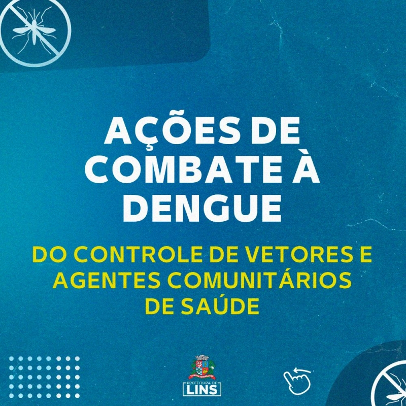
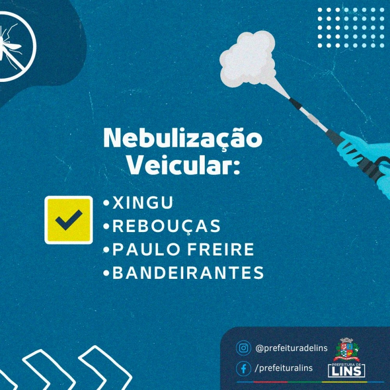
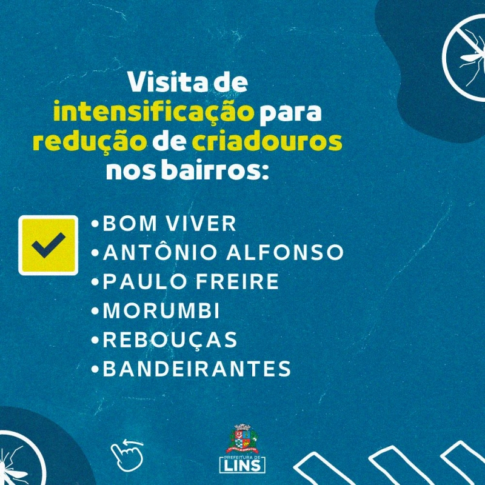

LINS CONTRA A DENGUE
LINS CONTRA A DENGUE
Campanhas Educativas
As campanhas em escolas, bairros e unidades de saúde têm como foco conscientizar sobre a importância da prevenção. Crianças e famílias se tornam agentes multiplicadores de boas práticas.
Nebulização
Utilizada em regiões com alta incidência de casos, a nebulização atua no combate ao mosquito adulto, interrompendo o ciclo de transmissão da doença.
Visitas Domiciliares
Agentes comunitários percorrem casas identificando e eliminando criadouros, além de fornecer orientações diretas aos moradores para prevenir focos de água parada.